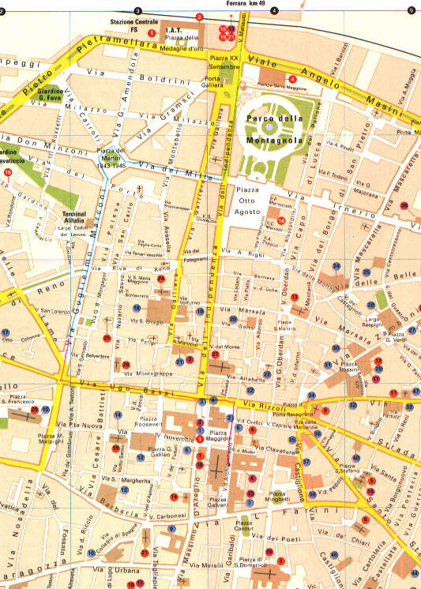

Con l'autobus, da Castel Maggiore fino a Bologna, siamo scesi all'ultima fermata di Via Marconi; dopo di che abbiamo proseguito a piedi percorrendo Via U. Bassi, un tratto di Via Rizzoli e siamo entrati in Via dell'Archiginnasio, andando a curiosare fino a Piazza Galvani dove abbiamo scattato una fantastica foto.